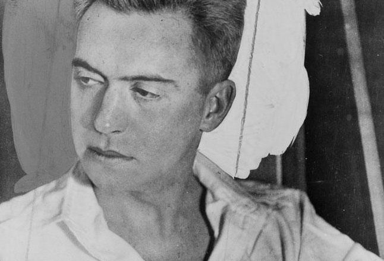
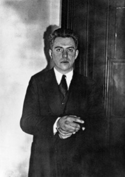
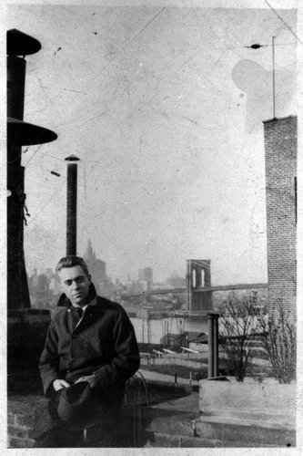
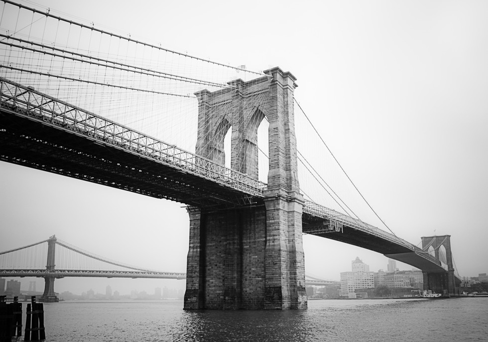

Hart Crane is considered a pivotal even prophetic figure in American literature; he is often cast as a Romantic in the decades of high Modernism. Crane’s version of American Romanticism extended back through Walt Whitman to Ralph Waldo Emerson, and in his most ambitious work, The Bridge, he sought nothing less than an expression of the American experience in its entirety. As Allen Tate wrote in Essays of Four Decades, “Crane was one of those men whom every age seems to select as the spokesman of its spiritual life; they give the age away.” He was born in Garrettsville, Ohio, in 1899 to upper middle-class parents, with whom he had a fraught relationship. He was raised in part by his grandmother in Cleveland. His grandmother’s library was extensive, featuring editions of complete works by poets such as Victorian Robert Browning and Americans Ralph Waldo Emerson and Walt Whitman, both of whom became major influences in Crane’s poetry. During his mid-teens Crane continued to read extensively, broadening his interests to include such writers as philosopher Plato, novelist Honore de Balzac, and Romantic poet Percy Bysshe Shelley. Crane’s formal education, however, was continually undermined by family problems necessitating prolonged absences from school. Finally, in 1916, he left Cleveland without graduating and moved to New York City to attend Columbia University, which he hoped to enter upon passing an entrance examination.
Once in New York City, however, Crane abandoned college and began vigorously pursuing a literary career. Through a painter he knew earlier from Cleveland, Crane met other writers and gained exposure to various art movements and ideas. Crane read widely, including the works of French Symbolists Charles Baudelaire and Arthur Rimbaud and contemporary Irishmen William Butler Yeats and James Joyce. Crane relied on his parents for financial support as well as selling advertising for the publication Little Review, which promoted the work of modernists such as Joyce and T. S. Eliot. During this time, Crane also associated with a far different periodical, Seven Arts, which devoted itself to traditional American literature extending from Nathaniel Hawthorne and Walt Whitman to Sherwood Anderson and Robert Frost. Both Seven Arts and Little Review exerted considerable influence on Crane, and in his own poetry he would seek to reconcile the two magazines’ disparate philosophies. At this time—around 1917—Crane was already producing publishable verse. Some of these works appeared in the local journal Pagan. Relatively short, Crane’s poems from this period reveal his interests in both tradition and experimentation, merging a rhyming structure with jarringly contemporary imagery. These early poems, though admired by some critics, were never held highly by Crane, and he never reprinted them in his lifetime.
Initially, Crane found New York City invigorating and even inspiring. But his parents divorced in 1917, and afterwards his mother and grandmother arrived to stay in his one-bedroom apartment. Bedridden from emotional exhaustion, Crane’s mother demanded his near constant attention. His problems mounted when his father, increasingly prosperous in the chocolate business, nonetheless threatened to withhold further funds until Crane found a job. To escape the pressures of family life, Crane attempted to enlist in the Army, only to be rejected as a minor. He then left New York City for Cleveland and found work in a munitions plant for the duration of World War I.
After the war, Crane stayed in Cleveland and found work as a reporter for the Cleveland Plain Dealer. He held that job only briefly, however, before returning to New York City to work once again for the Little Review. In mid-1919 his father used his influence in obtaining a position for his son as a shipping clerk. But Crane stayed at that job for only a few months before moving back to Ohio to work for his father’s own company. Their relationship was not congenial. Complicating matters further was the presence of Crane’s mother, with whom Crane had begun living after she returned to Cleveland. Tensions finally exploded in the spring of 1921 when Crane’s father criticized the son’s maternal ties, whereupon Crane apparently announced that he would no longer associate with his father. As biographer John Unterecker noted in Voyager: A Life of Hart Crane: “[Crane’s father] ... turned white with rage, shouting that if Hart didn’t apologize he would be disinherited. Hart climaxed the scene by screaming curses on his father and his father’s money.” The two men did not speak to each for the next two years. Upon leaving his father’s company, Crane stayed briefly in Cleveland working for advertising companies. He found similar work in New York City, but moving there hardly solved his ongoing personal problems. His mother continued to ply his sympathies by mail, regaling him with accounts of her emotional and physical troubles. Crane sought solace in sex but inevitably found heartbreak, for his infatuations with other men, including many sailors, went largely unreciprocated.
By 1922 Crane had already written many of the poems that would comprise his first collection, White Buildings. Among the most important of these verses is “Chaplinesque,” which he produced after viewing the great comic Charlie Chaplin’s film “The Kid.” In this poem Chaplin’s chief character—a fun-loving, mischievous tramp—represents the poet, whose own pursuit may be perceived as trivial but is nonetheless profound. For Crane, the film character’s optimism and sensitivity bears similarities to poets’ own outlooks toward adversity, and the tramp’s apparent disregard for his own persecution is indication of his innocence: “We will sidestep, and to the final smirk / Dally the doom of that inevitable thumb / That slowly chafes its puckered index toward us, / Facing the dull squint with what innocence / And what surprise!” A kind of optimism is also present in Crane’s poem “For the Marriage of Faustus and Helen,” also written in the early 1920s. Setting the marriage in contemporary times—Faustus rides a streetcar, and Helen appears at a jazz club—the poem suggests that Faust represents the poet seeking ideal beauty, and Helen embodies that beauty. In the poem’s concluding section, Helen’s beauty encompasses the triumph of the times too, and Crane calls for recognition of the age as one in which the poetic imagination surpasses the despair of recent events, notably World War I: “Distinctly praise the years, whose volatile / Blamed bleeding hands extend and thresh the height / The imagination spans beyond despair, / Outpacing bargain, vocable and prayer.” The optimism expressed in such poems as “For the Marriage of Faustus and Helen” was hardly indicative of Crane’s emotional state at the time. Soon after completing the aforementioned poem in the spring of 1923, Crane moved back to New York City and found work at another advertising agency. He once again found the job tedious and unrewarding. Adding to his displeasure was the unwelcome tumult and cacophony of city occurrences—automobile traffic, street vendors, and endless waves of marching pedestrians—that corrupted his concentration and stifled his imagination. By autumn Crane feared that his anxiety would soon lead to a nervous breakdown and so fled the city for nearby Woodstock. There he reveled in the relative tranquility of the rural environment and enjoyed the company of a few close friends.
Once revived, Crane traveled back to New York City. Soon afterwards he fell in love with a sailor, Emil Opffer. Their relationship—one of intense sexual passion and occasional turbulence—inspired “Voyages,” a poetic sequence in praise of love. In Hart Crane, Quinn described this poem as “a celebration of the transforming power of love” and added that the work’s “metaphor is the sea, and its movement is from the lover’s dedication to a human and therefore changeable lover to a beloved beyond time and change.” Here the sea represents love in all its shifting complexity from calm to storm, and love, in turn, serves as the salvation of us all: “Bind us in time, O Season clear, and awe. / O minstrel galleons of Carib fire, / Bequeath us to no earthly shore until / Is answered in the vortex of our grave / The seal’s wide spindrift gaze toward paradise.” With its dazzling poeticism and mysteriously inspiring perspective, this poem is often hailed as Crane’s greatest achievement. R. W. B. Lewis, for instance, wrote in The Poetry of Hart Crane that the poem was Crane’s “lyrical masterpiece.” By the time he finished “Voyages“ in 1924, Crane had already commenced the first drafts of his ambitious poem The Bridge, which he intended, at least in part, as an alternative to T. S. Eliot’s bleak masterwork, The Waste Land. With this long poem, which eventually comprised fifteen sections and sixty pages, Crane sought to provide a panorama of what he called “the American experience.” Adopting the Brooklyn Bridge as the poem’s sustaining symbol, Crane celebrates, in often obscure imagery, various peoples and places—from explorer Christopher Columbus and the legendary Rip Van Winkle to the contemporary New England landscape and the East River tunnel. The bridge, in turn, serves as the structure uniting, and representing, America. In addition, it functions as the embodiment of uniquely American optimism and serves as a source of inspiration and patriotic devotion: “O Sleepless as the river under thee, / Vaulting the sea, the prairies’ dreaming sod, / Unto us lowliest sometime sweep, descend / And of the curveship lend a myth to God.”
In 1926, while Crane worked on The Bridge, his verse collection White Buildings was published. This work earned him substantial respect as an imposing stylist, one whose lyricism and imagery recalled the French Romantics Baudelaire and Rimbaud. But it prompted speculation that Crane was an imprecise and confused artist, one who sometimes settled for sound instead of sense. Edmund Wilson, for instance, wrote in New Republic that “though [Crane] can sometimes move us, the emotion is oddly vague.” For Wilson, whose essay was later reprinted in The Shores of Light, Crane possessed “a style that is strikingly original—almost something like a great style, if there could be such a thing as a great style which was ... not ... applied to any subject at all.” Crane, for his part, responded to similar charges from Poetry editor Harriet Monroe by claiming that his poetry is consistent with the illogicality of the genre. “It all comes to the recognition,” he declared, “that emotional dynamics are not to be confused with any absolute order of rationalized definitions; ergo, in poetry the rationale of metaphor belongs to another order of experience than science, and is not to be limited by a scientific and arbitrary code or relationships either in verbal inflections or concepts.” By the time that White Buildings appeared in print, Crane’s intense relationship with Opffer had faded. Crane again alternated from euphoria to depression, seeking solace in alcohol and sexual encounters. Constant conflict with his mother further aggravated his despair, as did the death of his grandmother in 1928. More positively, Crane realized a reconciliation with his father around that time, but the parent’s death soon afterward only served to plunge the poet once more into depression.
With his inheritance, Crane fled his mother and traveled to Europe. There he associated with prominent figures in Paris’s American expatriate community, notably publisher and poet Harry Crosby, who murdered his mistress and killed himself the following year. Crane wrote little in Europe and when he returned to the United States he continued a pattern of self-destructive behaviors. Furthermore, his self-confidence was shaken by the disappointing reception accorded The Bridge by critics, many of whom expressed respect for his effort but dissatisfaction with his achievement. But even critics that deemed Crane’s work a failure readily expressed respect for his creative undertaking. William Rose Benet, for instance, declared in the Saturday Review of Literature that Crane had “failed in creating what might have been a truly great poem.” But Benet nonetheless deemed The Bridge “fascinating” and declared that it “reveals potencies in the author that may make his next work even more remarkable.” Crane, however, had entered a creative slump from which he would not recover. He applied for a Guggenheim fellowship with intentions of studying European culture and the American poetic sensibility. After obtaining the fellowship, though, Crane traveled to Mexico. At this time he also experienced a heterosexual romance—presumably his only one—with Peggy Baird, who was then married to prominent literary figure Malcolm Cowley. Crane wrote only infrequently, and he seemed to have felt that his poems confirmed his fears that his talent had declined significantly. Finally, in 1932, his despair turned all-consuming, and on April 27, while traveling by ship with Baird, Crane killed himself by leaping into the Gulf of Mexico.
Crane has received critical reevaluation in the last decades. In the years immediately after his death, Crane’s reputation was as a failed Romantic poet. Allen Tate, writing in his Essays of Four Decades, assessed Crane’s artistic achievement as an admirable, but unavoidable, failure. Tate noted that Crane, like the earlier Romantics, attempted the overwhelming imposition of his own will in his poetry, and in so doing reached the point at which his will, and thus his art, became self-reflexive, and thus self-destructive. “By attempting an extreme solution to the romantic problem,” Tate contended, “Crane proved that it cannot be solved.” New Critics like Tate and R.P. Blakmur tended to focus on Crane’s “failures” and “imperfections,” often declaring him “obscure.” In the 1970s and ‘80s, scholars working in queer theory rediscovered Crane as an exemplary outsider whose intense, opaque metaphors revealed cultural and historical conditions of queer life. For scholars such as Tim Dean, Crane’s hermetic language subverted binaries governing sexual and psychological life by generating modes of privacy at odds with “the closet,” a social system in which sexual identification determined how and where one circulated. For Dean and other critics who see Crane’s queerness as inextricable from his work’s density, Crane’s poetry shows, in Dean’s words, the “potential of poetic forms to alter ostensibly hegemonic constructions of sexuality and subjectivity.”
How many dawns, chill from his rippling rest The seagull’s wings shall dip and pivot him, Shedding white rings of tumult, building high Over the chained bay waters Liberty—
Then, with inviolate curve, forsake our eyes As apparitional as sails that cross Some page of figures to be filed away; —Till elevators drop us from our day ...
I think of cinemas, panoramic sleights With multitudes bent toward some flashing scene Never disclosed, but hastened to again, Foretold to other eyes on the same screen;
And Thee, across the harbor, silver paced As though the sun took step of thee yet left Some motion ever unspent in thy stride,— Implicitly thy freedom staying thee!
Out of some subway scuttle, cell or loft A bedlamite speeds to thy parapets, Tilting there momently, shrill shirt ballooning, A jest falls from the speechless caravan.
Down Wall, from girder into street noon leaks, A rip-tooth of the sky’s acetylene; All afternoon the cloud flown derricks turn ... Thy cables breathe the North Atlantic still.
And obscure as that heaven of the Jews, Thy guerdon ... Accolade thou dost bestow Of anonymity time cannot raise: Vibrant reprieve and pardon thou dost show.
O harp and altar, of the fury fused, (How could mere toil align thy choiring strings!) Terrific threshold of the prophet’s pledge, Prayer of pariah, and the lover’s cry,
Again the traffic lights that skim thy swift Unfractioned idiom, immaculate sigh of stars, Beading thy path—condense eternity: And we have seen night lifted in thine arms.
Under thy shadow by the piers I waited Only in darkness is thy shadow clear. The City’s fiery parcels all undone, Already snow submerges an iron year ...
O Sleepless as the river under thee, Vaulting the sea, the prairies’ dreaming sod, Unto us lowliest sometime sweep, descend And of the curveship lend a myth to God.
Insistently through sleep — a tide of voices — They meet you listening midway in your dream, The long, tired sounds, fog-insulated noises: Gongs in white surplices, beshrouded wails, Far strum of fog horns ... signals dispersed in veils.
And then a truck will lumber past the wharves As winch engines begin throbbing on some deck; Or a drunken stevedore's howl and thud below Comes echoing alley-upward through dim snow.
And if they take your sleep away sometimes They give it back again. Soft sleeves of sound Attend the darkling harbor, the pillowed bay; Somewhere out there in blankness steam
Spills into steam, and wanders, washed away — Flurried by keen fifings, eddied Among distant chiming buoys — adrift. The sky,
Cool feathery fold, suspends, distills This wavering slumber. ... Slowly — Immemorially the window, the half-covered chair Ask nothing but this sheath of pallid air.
And you beside me, blessed now while sirens Sing to us, stealthily weave us into day — Serenely now, before day claims our eyes Your cool arms murmurously about me lay.
While myriad snowy hands are clustering at the panes — your hands within my hands are deeds; my tongue upon your throat — singing arms close; eyes wide, undoubtful dark drink the dawn — a forest shudders in your hair!
The window goes blond slowly. Frostily clears. From Cyclopean towers across Manhattan waters — Two — three bright window-eyes aglitter, disk The sun, released — aloft with cold gulls hither.
The fog leans one last moment on the sill. Under the mistletoe of dreams, a star — As though to join us at some distant hill — Turns in the waking west and goes to sleep.
Above the fresh ruffles of the surf Bright striped urchins flay each other with sand. They have contrived a conquest for shell shucks, And their fingers crumble fragments of baked weed Gaily digging and scattering.
And in answer to their treble interjections The sun beats lightning on the waves, The waves fold thunder on the sand; And could they hear me I would tell them:
O brilliant kids, frisk with your dog, Fondle your shells and sticks, bleached By time and the elements; but there is a line You must not cross nor ever trust beyond it Spry cordage of your bodies to caresses Too lichen-faithful from too wide a breast. The bottom of the sea is cruel.
—And yet this great wink of eternity, Of rimless floods, unfettered leewardings, Samite sheeted and processioned where Her undinal vast belly moonward bends, Laughing the wrapt inflections of our love;
Take this Sea, whose diapason knells On scrolls of silver snowy sentences, The sceptred terror of whose sessions rends As her demeanors motion well or ill, All but the pieties of lovers’ hands.
And onward, as bells off San Salvador Salute the crocus lustres of the stars, In these poinsettia meadows of her tides,— Adagios of islands, O my Prodigal, Complete the dark confessions her veins spell.
Mark how her turning shoulders wind the hours, And hasten while her penniless rich palms Pass superscription of bent foam and wave,— Hasten, while they are true,—sleep, death, desire, Close round one instant in one floating flower.
Bind us in time, O Seasons clear, and awe. O minstrel galleons of Carib fire, Bequeath us to no earthly shore until Is answered in the vortex of our grave The seal’s wide spindrift gaze toward paradise.
Infinite consanguinity it bears— This tendered theme of you that light Retrieves from sea plains where the sky Resigns a breast that every wave enthrones; While ribboned water lanes I wind Are laved and scattered with no stroke Wide from your side, whereto this hour The sea lifts, also, reliquary hands.
And so, admitted through black swollen gates That must arrest all distance otherwise,— Past whirling pillars and lithe pediments, Light wrestling there incessantly with light, Star kissing star through wave on wave unto Your body rocking! and where death, if shed, Presumes no carnage, but this single change,— Upon the steep floor flung from dawn to dawn The silken skilled transmemberment of song; Permit me voyage, love, into your hands ...
Whose counted smile of hours and days, suppose I know as spectrum of the sea and pledge Vastly now parting gulf on gulf of wings Whose circles bridge, I know, (from palms to the severe Chilled albatross’s white immutability) No stream of greater love advancing now Than, singing, this mortality alone Through clay aflow immortally to you.
All fragrance irrefragably, and claim Madly meeting logically in this hour And region that is ours to wreathe again, Portending eyes and lips and making told The chancel port and portion of our June—
Shall they not stem and close in our own steps Bright staves of flowers and quills today as I Must first be lost in fatal tides to tell?
In signature of the incarnate word The harbor shoulders to resign in mingling Mutual blood, transpiring as foreknown And widening noon within your breast for gathering All bright insinuations that my years have caught For islands where must lead inviolably Blue latitudes and levels of your eyes,—
In this expectant, still exclaim receive The secret oar and petals of all love.
Meticulous, past midnight in clear rime, Infrangible and lonely, smooth as though cast Together in one merciless white blade— The bay estuaries fleck the hard sky limits.
—As if too brittle or too clear to touch! The cables of our sleep so swiftly filed, Already hang, shred ends from remembered stars. One frozen trackless smile ... What words Can strangle this deaf moonlight? For we
Are overtaken. Now no cry, no sword Can fasten or deflect this tidal wedge, Slow tyranny of moonlight, moonlight loved And changed ... “There’s
Nothing like this in the world,” you say, Knowing I cannot touch your hand and look Too, into that godless cleft of sky Where nothing turns but dead sands flashing.
“—And never to quite understand!” No, In all the argosy of your bright hair I dreamed Nothing so flagless as this piracy.
But now Draw in your head, alone and too tall here. Your eyes already in the slant of drifting foam; Your breath sealed by the ghosts I do not know: Draw in your head and sleep the long way home.
Where icy and bright dungeons lift Of swimmers their lost morning eyes, And ocean rivers, churning, shift Green borders under stranger skies,
Steadily as a shell secretes Its beating leagues of monotone, Or as many waters trough the sun’s Red kelson past the cape’s wet stone;
O rivers mingling toward the sky And harbor of the phoenix’ breast— My eyes pressed black against the prow, —Thy derelict and blinded guest
Waiting, afire, what name, unspoke, I cannot claim: let thy waves rear More savage than the death of kings, Some splintered garland for the seer.
Beyond siroccos harvesting The solstice thunders, crept away, Like a cliff swinging or a sail Flung into April’s inmost day—
Creation’s blithe and petalled word To the lounged goddess when she rose Conceding dialogue with eyes That smile unsearchable repose—
Still fervid covenant, Belle Isle, —Unfolded floating dais before Which rainbows twine continual hair— Belle Isle, white echo of the oar!
The imaged Word, it is, that holds Hushed willows anchored in its glow. It is the unbetrayable reply Whose accent no farewell can know.